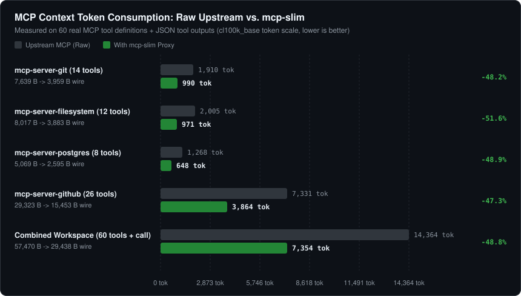
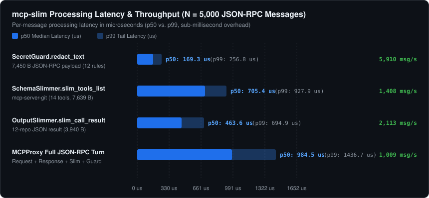

Transparent Model Context Protocol (MCP) JSON-RPC 2.0 stdio proxy that compresses bloated tools/list schemas and tools/call payloads while redacting leaked API keys and credentials in real time.
pip install git+https://github.com/SalyyS1/mcp-slim.git
mcp-slim wrap -i ~/.cursor/mcp.json
